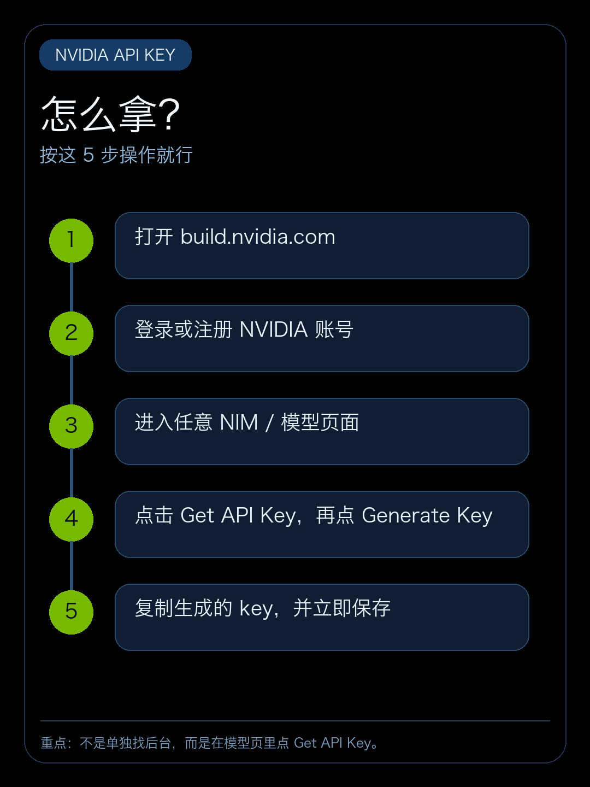
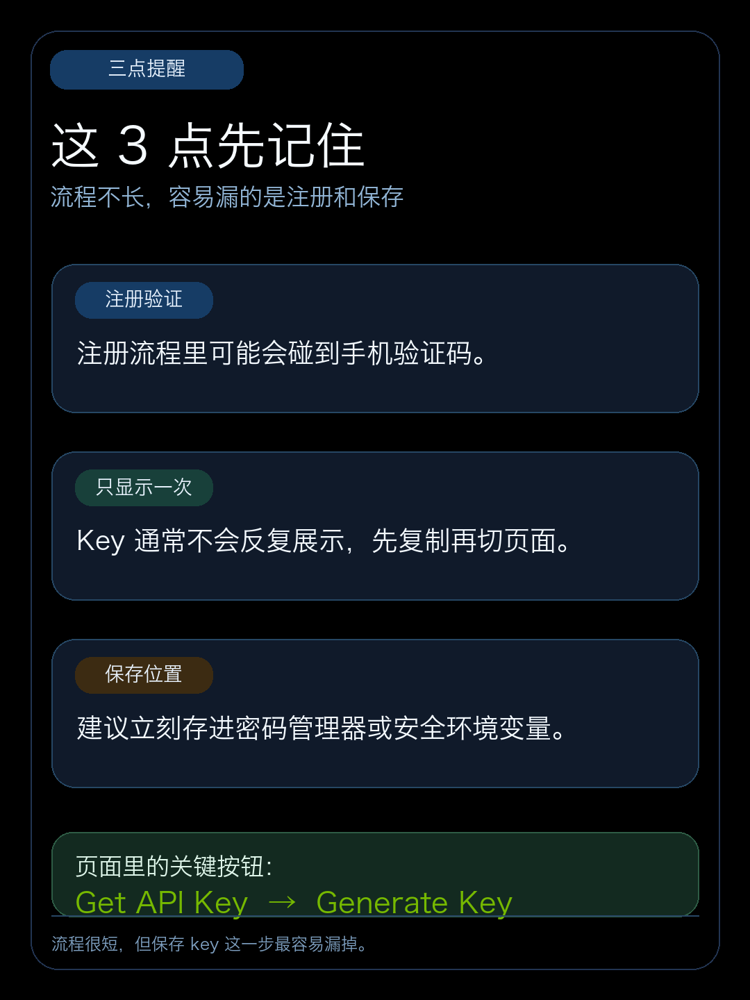
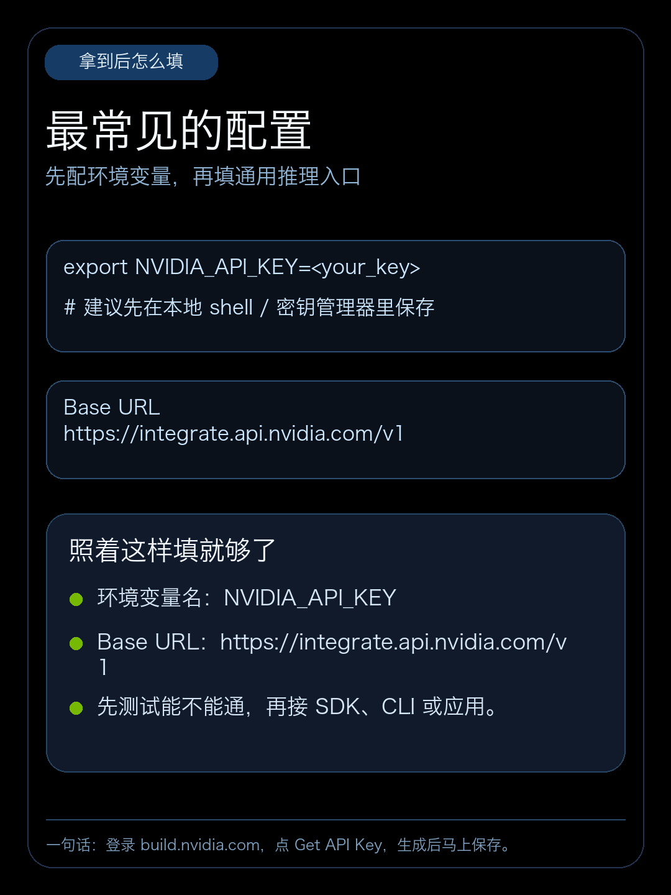

NVIDIA API Key 的入口在 build.nvidia.com 的模型页面里，不是在单独的开发者后台。
直接按这几步操作：登录账号，进入任意 NIM 或模型页，点击 Get API Key，再点 Generate Key，最后把生成的 key 立即保存。

有三点需要提前记住：注册时可能会碰到手机验证码；key 通常不会反复展示；拿到以后最好第一时间存进密码管理器或安全环境变量。

拿到 key 之后，最常见的接法就是把它配置成 NVIDIA_API_KEY 环境变量；如果你接 NVIDIA 的通用推理入口，Base URL 可以填 https://integrate.api.nvidia.com/v1 。

一句话：登录 build.nvidia.com，点 Get API Key，生成后马上保存。